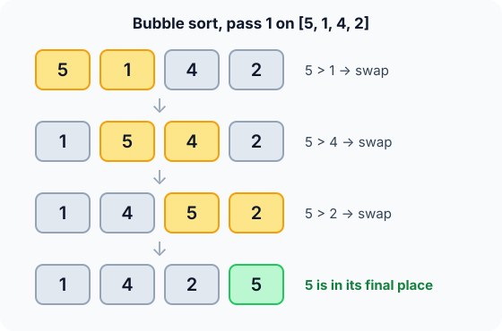

Prerequisites
- Arrays and zero-based indexing.
- Nested loops and how to count their iterations.
- Big-O notation (see Complexity analysis).
The analogy
Everyday analogy
Imagine a glass of soda: the biggest bubbles push past the small ones and reach the top first.
Bubble sort does the same with numbers. After the first pass, the biggest number is at the end. After the second pass, the two biggest are at the end. After $n-1$ passes, everything is in place.
How it works
Start with one pass by hand
Take [5, 1, 4, 2] and compare neighbours from left to right. At each step, guess first, then open "Check".
Example: pass 1, predict before you read
Step 1. Compare 5 and 1. Predict: swap or not?
Check
5 > 1, so swap: [1, 5, 4, 2].
Step 2. Cover the next line and guess: will 5 and 4 swap?
Check
Yes, 5 > 4: [1, 4, 5, 2]. Notice the 5 keeps moving right.
Step 3. Compare 5 and 2. Predict: where does the 5 end up?
Check
5 > 2, swap: [1, 4, 2, 5]. The 5 is at the end, in its final place.

Quick recall: Before reading further, cover the text below and say out loud: what does one pass of bubble sort guarantee?
Check your answer
After one pass, the largest element is in its final position at the end of the array.
Finish the run
The 5 is done, so pass 2 only looks at [1, 4, 2].
- Pass 2. Predict: which pair swaps?
Check
1 and 4 stay. 4 and 2 swap:
[1, 2, 4, 5]. - Pass 3. Only
1, 2are left to compare. Predict: does anything swap?Check
No. A pass with no swaps means we stop. Total: 6 comparisons, 4 swaps.
Quick recall: Without scrolling up, say out loud: why did the run on [5, 1, 4, 2] stop after pass 3 instead of continuing?
Check your answer
Pass 3 made no swaps, so every neighbour pair was already in order and the array was sorted.
The rule in plain words
Compare two neighbours. If the left is bigger, swap. Move one step right. Repeat until the end of the array. That is one pass.
Do passes until one makes no swaps. Each pass can stop one place earlier, because the end is already finished.
Quick recall: Before you read the code, write the three steps of one pass in your own words. Then check below.
Check your answer
1. Look at two neighbours. 2. If the left one is bigger, swap them. 3. Move one step right and repeat until you reach the finished part at the end.
The code
Read this code after you have done one pass by hand. It will make more sense.
void bubble_sort(int a[], int n) {
for (int i = 0; i < n - 1; i++) {
int swapped = 0;
for (int j = 0; j < n - 1 - i; j++) { /* last i items are final */
if (a[j] > a[j + 1]) { /* strict > keeps it stable */
int t = a[j]; a[j] = a[j + 1]; a[j + 1] = t;
swapped = 1;
}
}
if (!swapped) break; /* no swaps: already sorted */
}
}Definition
What you just did, in one line: a pass walks the unsorted part, comparing a[j] with a[j+1] and swapping when a[j] > a[j+1].
Bubble sort repeats passes until one makes no swaps.
flowchart TD
A["Start a pass: swapped = false"] --> B{"a[j] > a[j+1] ?"}
B -->|yes| C["Swap them, swapped = true"]
B -->|no| D["Move j one step right"]
C --> D
D --> E{"End of the unsorted part?"}
E -->|no| B
E -->|yes| F{"swapped?"}
F -->|yes| A
F -->|no| G["Done: the array is sorted"]
[5, 1, 4, 2], which arrow do you follow first, and what is the array after the first swap? (Answer: "yes" to the swap box, giving [1, 5, 4, 2].)How fast is it?
Quick recall: Before looking at the formula and the table, predict: on $n$ elements, how many comparisons do pass 1 and pass 2 make in the worst case?
Check your answer
Pass 1 makes $n-1$ comparisons and pass 2 makes $n-2$, because each pass can ignore one more finished element at the end.
In the worst case (reversed input), the passes make $n-1$, then $n-2$, … then $1$ comparisons. Adding them up:
$$\sum_{i=1}^{n-1} i \;=\; \frac{n(n-1)}{2} \;=\; O(n^2).$$Each swap fixes exactly one inversion, a pair with $i < j$ and $a_i > a_j$. So the number of swaps equals the number of inversions. In our example that was 4.
| Best | Average | Worst | Extra space | Stable | In-place |
|---|---|---|---|---|---|
| $O(n)$ | $O(n^2)$ | $O(n^2)$ | $O(1)$ | Yes | Yes |
Warning
The $O(n)$ best case needs the swapped flag. Without it, bubble sort does all $\frac{n(n-1)}{2}$ comparisons even on sorted input.
Exam tip
After $k$ passes, the last $k$ positions hold the $k$ largest values in their final order. Exams love asking for the array after pass 1 or pass 2.
Common mistakes
- Forgetting the
swappedflag, so sorted input still costs $O(n^2)$. - Running
jup ton - 1, which readsa[n]out of bounds, instead of stopping atn - 1 - i. - Swapping on
>=instead of>, which moves equal items past each other and breaks stability.
Try it yourself
Exercise 1 (warm-up)
Sort [3, 2, 1] by hand. How many comparisons and how many swaps does bubble sort make?
Hint
Count the inversions: every pair that is in the wrong order. That's your number of swaps.
Answer
3 comparisons (2 in pass 1, 1 in pass 2) and 3 swaps, since all three pairs are inverted.
Exercise 2 (a bit harder)
Sort [3, 1, 2, 4] by hand. How many passes does it take? How many swaps? Write your answer down before you open it.
Show answer
2 passes and 2 swaps. Pass 1 swaps 3↔1 and 3↔2, giving [1, 2, 3, 4]. Pass 2 makes no swaps, so the sort stops (5 comparisons in total).
Did you know?
Did you know?
Donald Knuth wrote that bubble sort "seems to have nothing to recommend it, except a catchy name". Real libraries don't use it.
So why learn it? It's the cleanest way to master the words every other sort uses: pass, inversion, best vs worst case, stable, in-place. And when libraries want a simple sort for small arrays, they pick its cousin, insertion sort, which does fewer writes.
Key points to remember
If you remember one thing from each line, remember the because.
- After pass $k$, the $k$ largest values are final, because each pass carries the largest remaining value all the way to the end.
- The worst case is $O(n^2)$ because there are up to $n-1$ passes, and together they make $\frac{n(n-1)}{2}$ comparisons.
- The best case is $O(n)$ because, with the flag, a sorted array needs just one pass with no swaps.
- The number of swaps equals the number of inversions because each neighbour swap fixes exactly one out-of-order pair.
- It is stable because it swaps only on a strict $>$, so equal values never pass each other.
- Extra space is $O(1)$ because it only swaps inside the array, using one temporary variable.
Self-check questions
Answer these in order, out loud. They follow the page, so your answers become the script of your video.
- Why is it called "bubble" sort?
Sample answer
Like bubbles rising in a soda, the largest values move toward the end one swap at a time.
- Walk through the first pass on [5, 1, 4, 2]. What is guaranteed at the end of it?
Sample answer
5 swaps with 1, then with 4, then with 2, giving [1, 4, 2, 5]. The largest element is now in its final position, so the next pass can ignore it.
- Looking at the code: is bubble sort stable and in-place? Which detail makes it stable?
Sample answer
Yes to both. The strict
>means equal neighbours are never swapped, so equal items never pass each other, and it needs only one temporary variable. - So what is bubble sort, in one sentence?
Sample answer
It repeatedly compares neighbouring elements and swaps them when they're out of order, until a full pass makes no swaps.
- When does the algorithm stop early?
Sample answer
When a whole pass makes no swaps: every neighbour pair is in order, so the array is sorted.
- Why does bubble sort have an $O(n)$ best case only when it uses an early-stop flag?
A good answer says what happens to the passes without the flag.
Sample answer
Without the flag it always runs all $n-1$ passes, so it can't notice that the array is already sorted. The flag is an $O(1)$ check that ends the loop after one pass with no swaps.
- What is its time and space complexity?
Sample answer
$O(n^2)$ in the worst and average case, $O(n)$ in the best case on sorted input with the early-stop flag. Extra space is $O(1)$.
- Why is the number of swaps exactly the number of inversions?
A good answer says which pairs a single swap affects.
Sample answer
Swapping two out-of-order neighbours fixes that one pair and leaves the order of every other pair unchanged. So each swap removes exactly one inversion, and sorting ends when none are left.
- Why would you pick insertion sort over bubble sort in practice?
Sample answer
Both are $O(n^2)$ and $O(n)$ on sorted input, but insertion sort shifts items instead of doing full three-step swaps, so it does fewer writes and runs faster. Bubble sort is mainly a teaching tool.
- If you had to teach this to a friend in 2 minutes, what would you leave out, and why?
Sample answer
I'd leave out the inversion count and the exact $\frac{n(n-1)}{2}$ formula, and keep one pass on a small array, the rule, the stop condition and "$O(n^2)$, stable, in-place". A beginner needs the picture and the takeaway, not the proof.
External resources
- VisuAlgo: Sorting: step through bubble sort on your own input.
- Toptal: Bubble sort animation: watch it race on random, nearly sorted and reversed data.
- GeeksforGeeks: Bubble sort: an article with code in several languages.
- Wikipedia: Bubble sort: history, analysis and variants such as cocktail shaker sort.
Videos
- YouTube: bubble sort as a Hungarian folk dance: the famous AlgoRythmics video, a fun way to remember the swaps.
- YouTube search: bubble sort explained: pick a short walkthrough of a full run.